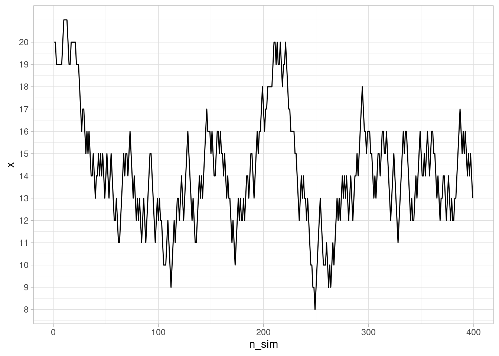
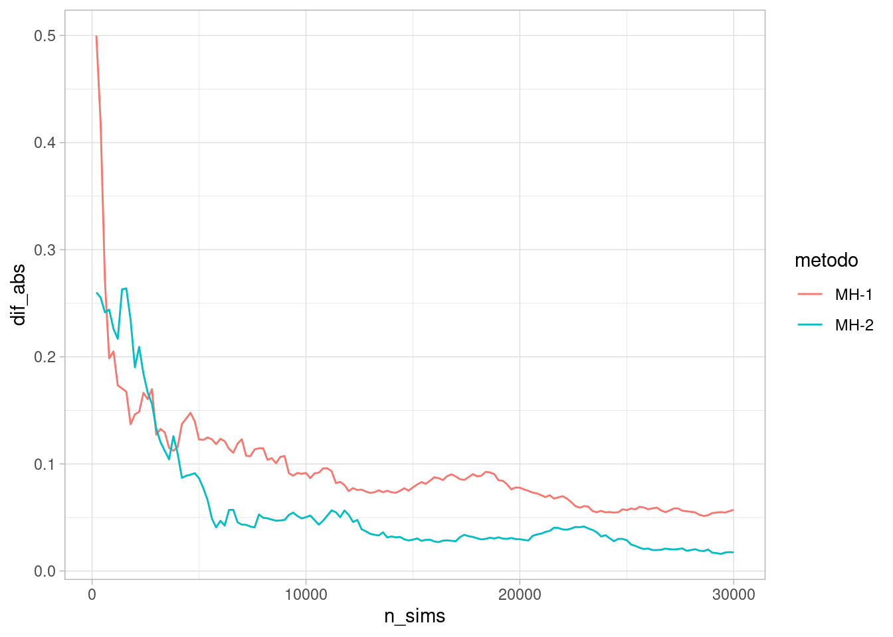

Código
library(tidyverse)
library(kableExtra)
library(DiagrammeR)
ggplot2::theme_set(ggplot2::theme_light())
inv_logit <- \(x) 1 / (1 + exp(-x)) library(tidyverse)
library(kableExtra)
library(DiagrammeR)
ggplot2::theme_set(ggplot2::theme_light())
inv_logit <- \(x) 1 / (1 + exp(-x)) En esta sección exlicaremos brevemente cómo funcionan paquetes como Stan para producir simulaciones de una posteriores complicadas en dimensión alta.
En primer lugar, recordemos que si queremos calcular la posterior de un modelo (generalmente para calcular después resúmenes que involucran integrales de esta posterior) tenemos los siguiente enfoques:
Stan utiliza 3, y hay variedad de algoritmos MCMC. Ya discutimos que 1, la aproximación analítica, es en general imposible (a menos fuera de ciertos modelos restringidos). La aproximación 2 excesivamente intensiva, al grado que sólo para modelos muy chicos y con pocos parámetros es posible utilizarla. Existen otros métodos también como aproximaciones cuadráticas que en ciertos casos funcionan, pero son limitados en su aplicación.
La idea de simulación de variables aleatorias es ahora fundamental en muchas áreas científicas, incluyendo la estadística, y los métodos que la utilizan se llaman métodos de Monte Carlo. Por ejemplo, considera el método bootstrap, pruebas de permutaciones, validación cruzada, y en general simulación para cálculo de resúmenes que son difíciles de calcular directamente (por ejemplo, la mediana de una distribución Gamma, ver Median approximations and bounds aquí).
Uno de los primeros algoritmos MCMC fue el de Metropolis-Hastings, que veremos primero en algunos ejemplos. Veremos también por qué ahora tenemos mejores opciones que MH para estimar posteriores de nuestros modelos.
Supongamos que queremos simular de una variable aleatoria \(X\) con distribución discreta sobre los valores \(1,2\ldots, k\) con probabilidades \(p(1),p(2),\ldots,p(k)\). Este problema puede resolverse fácilmente de varias maneras, pero utilizaremos un método de Monte Carlo tipo Metropolis. Supongamos que podemos simular de una variable aleatoria \(U\) que es uniforme en \(1,2,\ldots, k\) (con probabilidades iguales a 1/k).
Lo que podemos hacer es lo que sigue, para \(i=1,\ldots, M\):
Para cada \(i\),
El resultado es una sucesión de valores \(x_1,x_2,\ldots, x_M\). Es posible demostrar que la distribución de estas \(x_i\) converge a la distribución \(p(1),\ldots, p(k)\) si \(M\) es suficientemente grande.
Este método se llama Metropolis-Hastings. Es un método de Monte Carlo, y como podemos ver, se trata de una cadena de Markov, pues la distribución cada siguiente lugar \(x_{i+1}\), condicionada al valor actual \(x_i\) no depende de valores anteriores de las \(x\).
set.seed(45123)
# definimos estas p
k <- 40
p <- exp(-(1:k - k/3)^2 / 10)
p <- p /sum(p)
dist_obj <- tibble(x = 1:k, p = p)
# simulamos
M <- 200000
x <- numeric(M)
x[1] <- 20
for(i in 1:M){
u <- sample(1:k, 1)
q <- p[u] / p[x[i]]
if(runif(1) < q){
x[i+1] <- u
} else {
x[i+1] <- x[i]
}
}En rojo mostramos las probabilidades objetivo que queremos estimar, y en negro las estimadas con nuestro método de arriba.
resultados_sim <- tibble(x = x) |>
mutate(n_sim = row_number())
resumen_sim <- resultados_sim |> count(x) |>
right_join(tibble(x = 1:k, p = p)) |>
mutate(n = ifelse(is.na(n), 0, n)) |>
mutate(p_aprox = n / sum(n))Joining with `by = join_by(x)`ggplot(dist_obj, aes(x = x)) +
geom_point(aes(y = p)) +
geom_point(data = resumen_sim,
aes(y = p_aprox), color = "red", size = 3, alpha = 0.5) 
Como vemos, los valores de \(x_1,\ldots, x_M\) se distribuyen aproximadamente como la distribución \(p\) objetivo. Esta es una manera de simular valores de esta distribución discreta \(p\). Podemos ver cómo se ven las simulaciones sucesivas:
ggplot(resultados_sim |> filter(n_sim < 400), aes(x = n_sim, y = x)) +
geom_line() + scale_y_continuous(breaks = 1:20)
El defecto que tiene este algoritmo es que puede ser relativamente lento, pues vemos que hay periodos largos donde se “atora” en valores de probabilidad relativamente alta. La razón es que en muchos pasos, estamos proponiendo “saltos al vacío” a lugares de probabilidad muy baja, que rara vez se aceptan.
Podemos hacer más eficiente nuestro algoritmo si le permitimos explorar con mayor facilidad los posibles valores de \(x\). Esto se logra proponiendo saltos locales: si estamos en \(x_i\), entonces proponemos los valores \(x_i - 1\) y \(x_i + 1\) con la misma probabilidad 1/2 (excepto en los extremos donde sólo proponemos \(x_i,x_i+1\) o \(x_i-1,x_i\)).
Proponemos entonces la suguiente modificación del paso 1 de propuesta:
Para cada \(i\),
Esto lo escribimos como sigue:
#set.seed(4511)
# simulamos
x <- numeric(M)
x[1] <- 20
for(i in 1:M){
u <- sample(c(x[i] - 1, x[i] + 1), 1)
if(u == k+1) u <- k
if(u == 0) u <- 1
q <- p[u] / p[x[i]]
if(runif(1) < q){
x[i+1] <- u
} else {
x[i+1] <- x[i]
}
}Obtenemos:
resultados_sim_2 <- tibble(x = x) |>
mutate(n_sim = row_number())
resumen_sim_2 <- resultados_sim_2 |> count(x) |>
mutate(p_aprox = n / sum(n))
ggplot(dist_obj, aes(x = x)) +
geom_point(aes(y = p)) +
geom_point(data = resumen_sim_2,
aes(y = p_aprox), color = "red", size = 3, alpha = 0.5) Y podemos ver cómo evoluciona nuestra cadena de Markov:
ggplot(resultados_sim_2 |> filter(n_sim < 400), aes(x = n_sim, y = x)) +
geom_line() + scale_y_continuous(breaks = 1:20)
¿Cómo se comparan estos dos métodos? Podemos ver por ejemplo cómo se comparan las distribuciones aproximadas hasta cierto número de iteraciones con la verdadera distribución objetivo:
approx_sim <- map_df(seq(200, 30000, by = 200), function(n_sims){
resumen_1 <- resultados_sim |> filter(n_sim <= n_sims) |>
count(x) |>
mutate(p_aprox = n / sum(n)) |>
select(-n) |>
right_join(dist_obj, by = "x") |>
mutate(metodo = "MH-1") |>
mutate(n_sims = n_sims)
resumen_2 <- resultados_sim_2 |> filter(n_sim <= n_sims) |>
count(x) |>
mutate(p_aprox = n / sum(n)) |>
select(-n) |>
right_join(dist_obj, by = "x") |>
mutate(metodo = "MH-2") |>
mutate(n_sims = n_sims)
bind_rows(resumen_1, resumen_2) |>
mutate(p_aprox = ifelse(is.na(p_aprox), 0, p_aprox))
})approx_sim |>
mutate(dif_abs = abs (p_aprox-p)) |>
group_by(metodo, n_sims) |>
summarise(dif_abs = sum(dif_abs)) |>
ggplot(aes(n_sims, dif_abs, color = metodo)) +
geom_line() `summarise()` has grouped output by 'metodo'. You can override using the
`.groups` argument.
En este caso, considera qué es lo que sucede en cada uno de estos casos:
Este es el primer trade-off que existe en este algoritmo: tomar pasos grandes y balancear las probabilidades quizá rechazando muy frecuentemente (no es eficiente), o tomar pasos chicos y vagar más tiempo para visitar regiones de alta probabilidad, aunque con menos tasa de rechazo. Dependiendo de la distribución que queremos aproximar podemos inclinarnos más por una o por otra opción. En dimensiones altas generalmente ninguna combinación es muy buena.
En MCMC, buscamos un cadena de Markov que, en el largo plazo, visite cada posible valor del parámetro proporcionalmente a la probabildad posterior del parámetro. En el caso multivariado es la misma idea: cada combinación de parámetros debe ser visitada por la cadena en proporción a su probabilidad posterior.
¿Por qué funcionan estos algoritmos? Supongamos que en cada paso, se cumple que (balance detallado): \[{q(x|y)}p(y) = {q(y|x)}{p(x)}\] donde \(q(x|y)\) son las probabilidades de transición de nuestra cadena de Markov propuesta. Esta ecuación dice que la proporción de transiciones de \(y\) a \(x\) en relación a las transiciones de \(x\) a \(y\) es la misma que la proporción de probabildad que hay entre \(y\) y \(x\) en la distribución objetivo.
Esta ecuación implica que si la probabilidad se distribuye como \(p(x)\), entonces al transicionar con \(q\) la probabilidad fluje de manera que se mantiene estática en \(p\), es decir \(p\) es una distribución estacionaria para la cadena de Markov producida por las transiciones.
Esto es fácil de demostrar pues \[\sum_{y} q(x|y)p(y) = \sum_{y} q(y|x)p(x) = p(x) \sum_{y} q(y|x) = p(x).\]
Bajo otros supuestos adicionales de ergodicidad (aperiodicidad y tiempos de recurrencia finitos, es decir, las transiciones mezclan bien los estados), entonces podemos simular la cadena de Markov por un tiempo suficientemente largo y con esto obtener una muestra de la distribución objetivo \(p\), es decir, la distribución estacionaria \(p(x)\) también es la distribución de largo plazo para cualquier cadena que simulemos.
¿Cómo podemos diseñar entonces las \(q(x|y)\) correspondientes?
Comenzamos considerando distribuciones propuesta \(q_0(x|y)\) que no necesariamente satisfacen la ecuación de balance, y supondremos como en los ejemplos de arriba (verifícalo) que nuestras transiciones tienen probabilidades simétricas \(q_0(y|x) = q_0(x|y)\). Entonces, cuando \(p(y)/p(x) > 1\), queremos transicionar de \(x\) a \(y\) con más frecuencia que de \(y\) a \(x\). Comenzando en \(x\), si la propuesta de \(q_0(y|x)\) es \(y\), podríamos poner entonces que el sistema transicione con probabilidad 1 a \(y\). Sin embargo, si empezamos en \(y\) y la propuesta es \(x\), ponemos que el sistema sólo transiciona de \(y\) a \(x\) con probabilidad \(p(x)/p(y)\).
De esta manera, obtenemos que bajo \(q(y|x)\), \(x\) transiciona a \(y\) con probabilidad \(\min\{1, p(y)/p(x)\}\). Entonces, el cociente \(\frac{q(y|x)}{q(x|y)}\) es igual a \(\frac{p(y)}{p(x)}\) si \(p(y)<p(x)\), y es igual a \(1/\frac{p(x)}{p(y)} = \frac{p(y)}{p(x)}\) si \(p(y)>p(x)\). Esto demuestra que se cumple el balance detallado.
Supongamos ahora que quisiéramos simular de una normal multivariada con media en c(2,3) y matriz de covarianza \(\Sigma\), que supondremos es tal que la desviación estándar de cada variable es 1 y la correlación es 0.8. La matriz \(\Sigma\) tiene 1 en la diagonal y 0.8 fuera de la diagonal.
La distribución objetivo \(p\) está dada entonces (módulo una constante de proporcionalidad):
construir_log_p <- function(m, Sigma){
Sigma_inv <- solve(Sigma)
function(z){
- 0.5 * (t(z-m) %*% Sigma_inv %*% (z-m))
}
}
Sigma <- matrix(c(1, 0.8, 0.8, 1), nrow = 2)
m <- c(2, 3)
log_p <- construir_log_p(m, Sigma)Nótese que como Metropolis hace cocientes de probabilidades, sólo es necesario conocer la densidad objetivo módulo una constante de proporcionalidad.
Una algoritmo de Metropolis podría ser el siguiente:
# simulamos
M <- 50000
metropolis_mc <- function(M, z_inicial = c(0,0), log_p, delta_x, delta_y){
z <- matrix(nrow = M, ncol = 2)
z[1, ] <-z_inicial
colnames(z) <- c("x", "y")
rechazo <- 0
for(i in 1:(M-1)){
x_prop <- rnorm(1, z[i, 1], delta_x)
y_prop <- rnorm(1, z[i, 2], delta_y)
z_prop <- c(x_prop, y_prop)
q <- exp(log_p(z_prop) - log_p(z[i, ]))
if(runif(1) < q){
z[i + 1, ] <- z_prop
} else {
rechazo <- rechazo + 1
z[i + 1, ] <- z[i, ]
}
}
print(rechazo / M)
z_tbl <- as_tibble(z) |>
mutate(n_sim = row_number())
z_tbl
}
z_tbl <- metropolis_mc(M, c(2.5, 3.5), log_p, 1.0, 1.0)[1] 0.59752Vemos que tenemos una tasa alta de rechazos. ¿Por qué? Veamos cómo se ven las simulaciones hasta 500 iteraciones:
# estas las usamos para graficar
sims_normal <- mvtnorm::rmvnorm(100000, mean = m, sigma = Sigma)
colnames(sims_normal) <- c("x", "y")
sims_normal <- as_tibble(sims_normal)
elipses_normal <-list(stat_ellipse(data = sims_normal, aes(x, y),
level = c(0.9), type = "norm", colour = "salmon"),
stat_ellipse(data = sims_normal, aes(x, y),
level = c(0.5), type = "norm", colour = "salmon"),
stat_ellipse(data = sims_normal, aes(x, y),
level = c(0.2), type = "norm", colour = "salmon"))graf_tbl <- map_df(seq(10, 500, 20), function(i){
z_tbl |> filter(n_sim <= i) |> mutate(num_sims = i)
})
ggplot(graf_tbl, aes(x, y)) +
elipses_normal +
geom_point(alpha = 0.1) +
facet_wrap(~num_sims) + theme_minimal()
library(gganimate)
anim_mh_1 <- z_tbl |> filter(n_sim < 50) |>
ggplot() +
geom_point(aes(x, y, group = n_sim), size = 3) +
transition_reveal(n_sim) +
elipses_normal +
labs(title = 'Iteración: {frame_along}') +
theme_minimal()
anim_save(animation = anim_mh_1, filename = "figuras/mh-1-normal.gif",
renderer = gifski_renderer())
Observaciones:
Podemos entonces proponer saltos más chicos, por ejemplo:
z_tbl <- metropolis_mc(M, c(2.5, 3.5), log_p, 0.2, 0.2)[1] 0.15584graf_tbl <- map_df(seq(10, 500, 20), function(i){
z_tbl |> filter(n_sim <= i) |> mutate(num_sims = i)
})
ggplot(graf_tbl, aes(x, y)) +
stat_ellipse(data = sims_normal, aes(x, y),
level = c( 0.9), type = "norm", colour = "salmon") +
stat_ellipse(data = sims_normal, aes(x, y),
level = c( 0.5), type = "norm", colour = "salmon") +
geom_point(alpha = 0.1) +
facet_wrap(~num_sims) + theme_minimal()anim_mh_2 <- z_tbl |> filter(n_sim < 150) |>
ggplot() +
geom_point(aes(x, y, group = n_sim), size = 3) +
transition_reveal(n_sim) +
elipses_normal +
labs(title = 'Iteración: {frame_along}') +
theme_minimal()
anim_save(animation = anim_mh_2, filename = "figuras/mh-2-normal.gif",
renderer = gifski_renderer())Observaciones:
En el algoritmo de Metropolis Hastings hay una tensión natural entre el tamaño de salto y la tasa de aceptación. Si el tamaño de los saltos es muy grande, la tasa de aceptación puede ser baja y esto producen ineficiencias. Si el tamaño de los saltos es muy chico, la tasa de aceptación es más alta, pero esto también es ineficiente pues la cadena puede explorar muy lentamente el espacio de parámetros.
Existen métodos que pueden superar este problema, como son muestreo de Gibbs y Monte Carlo Hamiltoniano. El primero no lo discutiremos, pues requiere poder simular fácilmente de cada parámetro dados los otros, y esto no siempre es posible. Veremos más el segundo, donde usaremos información del gradiente de la distribución objetivo para proponer exploración más eficiente.
Una manera de mejorar la exploración de Metropolis es utilizar una distribución de propuestas más apropiada. La intuición en el caso anterior es:
La idea de HMC es considerar el problema de muestrear de una distribución como un problema físico, donde introducimos aleatoridad solamente en cuanto a la “energía” de la pelota que va a explorar la posterior. Inicialmente impartimos un momento tomado al azar a la pelota, seguimos su trayectoria por un tiempo y el lugar a donde llega es nuestra nueva simulación. Esto permite que podamos dar saltos más grandes, sin “despeñarnos” en regiones de probabilidad muy baja y así evitar rechazos.
Adicionalmente, veremos que si definimos el sistema físico apropiadamente, es posible obtener ecuaciones de balance detallado, lo cual en teoría nos garantiza una manera de transicionar que resultará a largo plazo en una muestra de la distribución objetivo.
Primero veremos cuál es la formulación Hamiltoniana (muy simple) de un sistema físico que nos sirve para encontrar la trayectoria de partículas del sistema. Consideremos una sola partícula cuya posición está dada por \(q\), que suponemos en una sola dimensión. La partícula rueda en una superficie cuya altura describimos como \(V(q)\), y tiene en cada instante tiene momento \(p = m\dot{q}\).
El Hamiltoniano es la energía total de este sistema, en el espacio fase que describe el estado de cada partícula dadas su posición y momento \((p,q)\), y es la suma de energía cinética más energía potencial:
\(H(p,q) = T(p) + V(q)\)
donde \(V(q) = q^2/2\) está dada y \(T(p) = \frac{p^2}{2m}\), de modo que
\[H(p, q) = \frac{p^2}{2m} + V(q) = \frac{p^2}{2m} + \frac{q^2}{2}\]
Ahora consideremos las curvas de nivel de \(H\), que en este caso se conservan a lo largo del movimiento de la partícula. Como sabemos por cálculo, estas curvas son perpendiculares al gradiente del Hamiltoniano, que es \((\partial{H}/\partial{p}, \partial{H}/\partial{q})\). El movimiento de las partículas, sin embargo, es a lo largo de las curvas de nivel, de manera que el flujo instantáneo debe estar dado por el gradiente de \(H\) rotado 90 grados, es decir, por \((\partial{H}/\partial{q}, -\partial{H}/\partial{p})\).
Entonces tenemos que el movimiento de la partícula debe cumplir las ecuaciones de Hamilton:
\[\frac{dp}{dt} = \frac{\partial{H}}{\partial{q}}, \frac{dq}{dt} = -\frac{\partial{H}}{\partial{p}}\] Simplificando y usando la definición de \(H\), obtenemos que \[\frac{dq}{dt} = \frac{p}{m}, \frac{dp}{dt} = -\frac{\partial{V}}{\partial{q}} = -q\] Ilustramos este campo vectorial en la siguiente gráfica, donde escogemos \(V(q) = q^2/2\), \(m=1\), y dibujamos algunas curvas de nivel del Hamiltoniano:
espacio_fase_1 <- tibble(p = seq(-3, 3, length.out = 1000), q = seq(-3, 3, length.out = 1000)) |>
expand(p, q) |>
mutate(dq = p, dp = -q) |>
mutate(H = p^2/2 + q^2/2)
espacio_fase <- tibble(p = seq(-3, 3, length.out = 10), q = seq(-3, 3, length.out = 10)) |>
expand(p, q) |>
mutate(dq = p, dp = -q)
espacio_fase |>
ggplot(aes(p, q)) +
geom_contour(data = espacio_fase_1, aes(x = p, y = q, z = H)) +
geom_segment(aes(xend = p + dp/5, yend = q + dq/5),
arrow = arrow(length = unit(0.1, "inches"))) +
theme_minimal() +
labs(subtitle = "Movimiento en espacio fase: 1 dimensión")Ojo: este no es le movimiento de una partícula en dimensión 2: es el movimiento de la partícula en el espacio fase \((p,q)\), y la variable de posición \(q\) es de dimensión 1. Los ciclos de la gráfica muestran como conforme la partícula se mueve, energía potencial y cinética se intercambian a lo largo de su trayectoria en un “hilo”.
Consideremos una partícula en el espacio de parámetros \(\theta\). En esta formulación, si \(\theta\) son los parámetros de interés, consideramos la energía potencial del sistema como \(V(p) = -\log p(\theta)\), donde \(p(\theta)\) es la distribución objetivo.
Buscamos simular del sistema con ecuaciones de movimiento para \(\theta\). Como hicimos antes, vamos a levantar al espacio fase incluyendo el momento, que denotaremos como \(\rho\). La energía cinética, en el caso más simple, podemos definirla (en la práctica existen reescalamientos) como como \(T(\rho) =\frac{1}{2}\sum_i \rho_i^2\) (la energía cinética es proporcional al momento cuadrado, pues el momento es masa por velocidad).
El Hamiltoniano por definición \(H(\rho, \theta) = T(\rho) + V(\theta)\), y las ecuaciones de Hamilton son las mismas que arriba, que en este caso nos dan
\[\frac{d\theta}{dt} = \rho, \frac{d\rho}{dt} = \nabla(\log(p(\theta)).\]
Si resolvemos estas ecuaciones, podemos entonces simular del sistema como sigue:
Este método produce simulaciones de la distribución objetivo bajo condiciones de regularidad. Podemos demostrar por ejemplo, que se cumple el balance detallado.
Supongamos que las transiciones que da este sistema son \(q(y|x)\). Nótese que dado el momento simulado, tenemos el estado \((\rho, x)\), y la transición \(x\to\y\) es determinista, gobernada por las ecuaciones de Hamilton. Escribimos la transición como \[(\rho, x) \to (\rho^*, y).\] Nótese que \(\rho\) y \(x\) determinan la transición, de modo que
\[p(x)q(y|x) = p(x)p(\rho) = \exp(-H(\rho, x)) = \exp(-H(\rho^*, y))\] Que es cierto por conservación de la energía total y la transición sigue exactamente trayectorias del Hamiltoniano. Esta última cantidad, usando un argumento similar, es igual a
\[p(y)p(\rho^*) = p(y)p(-\rho^*) = p(y) q(x|y)\] La segunda igualdad se da porque \(p(\rho)\) es Gaussiana (simétrica). Y finalmente, la última igualdad se da porque si necesitamos momento \(\rho\) para llegar de \(x\) a \((\rho^*, y)\), entonces necesitamos \(-\rho^*\) (volteamos la velocidad ifnal) para llegar de \(y\) a \((\rho, x)\), pues el sistema físico es reversible.
Nótese que este argumento se rompe si por ejemplo si es imposible transicionar de un punto a otro (por ejemplo, cuando la distribución objetivo \(p\) tiene dos regiones separadas de probabilidad positiva).
Para aproximar soluciones de estas ecuaciones diferenciales utilizamos el integrador leapfrog, en el que hacemos actualizaciones alternadas de posición y momento con un tamaño de paso \(\epsilon\) chico. Hacemos este paso un número \(L\) de veces, para no quedar muy cerca del valor inicial.
En nuestro ejemplo, actualizaríamos por ejemplo el momento a la mitad del paso:
\[\rho_{t+\epsilon/2} = \rho_t - \frac{\epsilon}{2}\nabla(\log(p(\theta_t)))\] Seguido de una actualización de la posición:
\[\theta_{t+\epsilon} = \theta_t + \epsilon \rho_{t+\epsilon/2}\] y finalmente otra actualización del momento:
\[\rho_{t+\epsilon} = \rho_{t+\epsilon/2} - \frac{\epsilon}{2}\nabla(\log(p(\theta_{t+\epsilon})))\] Al final de este proceso, encontraremos que por errores numéricos, quizá el Hamiltoniano varió un poco. Si esto sucede, podemos hacer un paso de aceptación y rechazo como en Metropolis Hastings, donde la probabilidad de aceptar es
\[\min\left(1, \exp(H(\rho,\theta) - H(\rho^{*},\theta^{*}))\right)\] donde \(\rho^{*}\) y \(\theta^{*}\) son los valores de momento y posición nuevos y \(H(\rho,\theta)\) es el Hamiltoniano en el paso anterior.
Observaciones:
Primero calculamos el gradiente que requerimos. En este caso, podemos hacerlo analíticamente:
construir_log_p <- function(m, Sigma){
Sigma_inv <- solve(Sigma)
function(z){
- 0.5 * (t(z-m) %*% Sigma_inv %*% (z-m))
}
}
Sigma <- matrix(c(1, 0.8, 0.8, 1), nrow = 2)
m <- c(2, 3)
log_p <- construir_log_p(m, Sigma)
# en diferenciación automática, el siguiente constructor
# puede tomar como argumento log_p, pero aquí la escribimos
# explícitamente
construir_grad_log_p <- function(m, Sigma){
Sigma_inv <- solve(Sigma)
function(theta){
- Sigma_inv %*% (theta-m)
}
}
grad_log_p <- construir_grad_log_p(m, Sigma)
construir_H <- function(m, Sigma){
Sigma_inv <- solve(Sigma)
function(theta, rho){
- log_p(theta) + 0.5 * sum(rho^2)
}
}
H <- construir_H(m, Sigma)
log_p(c(1,3)) [,1]
[1,] -1.388889grad_log_p(c(1,3)) [,1]
[1,] 2.777778
[2,] -2.222222Ahora, implementamos el algoritmo de HMC. Primero, definimos una función
hamilton_mc <- function(n, theta_0 = c(0,0), log_p, grad_log_p, epsilon, L){
p <- length(theta_0)
theta <- matrix(0, n, p)
theta[1, ] <- theta_0
rho <- matrix(0, n, p)
theta_completa <- matrix(0, n*L, p)
theta_completa[1, 0] <- theta_0
rho_completa <- matrix(0, n*L, p)
indice_completa <- 2
rechazo <- 0
for(i in 2:n){
prop_rho <- rnorm(p)
rho[i-1, ] <- prop_rho
prop_theta <- theta[i-1, ]
for(t in 1:L){
prop_rho <- prop_rho + 0.5 * epsilon * grad_log_p(prop_theta)
prop_theta <- prop_theta + epsilon * prop_rho
prop_rho <- prop_rho + 0.5 * epsilon * grad_log_p(prop_theta)
theta_completa[indice_completa,] <- prop_theta
rho_completa[indice_completa,] <- prop_rho
indice_completa <- indice_completa + 1
}
q <- min(1, exp(H(theta[i-1, ], rho[i-1, ]) -
H(prop_theta, prop_rho)))
if(runif(1) < q){
theta[i, ] <- prop_theta
} else {
rechazo <- rechazo + 1
theta[i, ] <- theta[i-1, ]
rho[i, ] <- rho[i-1, ]
theta_completa[indice_completa - 1,] <- theta[i-1, ]
rho_completa[indice_completa - 1,] <- rho[i-1, ]
}
}
print(rechazo / n)
list(sims = tibble(x = theta[,1], y = theta[,2]),
trayectorias = tibble(x = theta_completa[,1], y = theta_completa[,2]) |>
mutate(iteracion = rep(1:n, each = L), paso = rep(1:L, times = n)))
}Revisamos que la muestra aproxima apropiadamente nuestra distribución
set.seed(10)
hmc_salida <- hamilton_mc(1000, c(0,0), log_p, grad_log_p, 0.2, 12)[1] 0.016ggplot(hmc_salida$sims, aes(x = x, y = y)) + geom_point() +
stat_ellipse(data = sims_normal, aes(x, y),
level = c(0.9), type = "norm", colour = "salmon") +
stat_ellipse(data = sims_normal, aes(x, y),
level = c( 0.5), type = "norm", colour = "salmon") +
stat_ellipse(level = c( 0.9), colour = "green", type = "norm") +
stat_ellipse(level = c( 0.5), colour = "green", type = "norm") tray_tbl <- hmc_salida$trayectorias
head(tray_tbl)# A tibble: 6 × 4
x y iteracion paso
<dbl> <dbl> <int> <int>
1 0 0 1 1
2 -0.0185 0.0409 1 2
3 -0.0757 0.231 1 3
4 -0.148 0.545 1 4
5 -0.201 0.940 1 5
6 -0.192 1.37 1 6library(gganimate)
anim_hmc <- ggplot(tray_tbl |> mutate(iter = 4*as.numeric(paso == 1),
s = as.numeric(paso == 2)) |>
filter(iteracion < 30) |>
mutate(tiempo = row_number()) |>
mutate(tiempo = tiempo + cumsum(50 * s)),
aes(x = x, y = y)) +
geom_point(aes(colour = iter, alpha = iter, size = iter, group = tiempo)) +
geom_path(colour = "gray", alpha = 0.5) +
transition_reveal(tiempo) +
elipses_normal +
theme(legend.position = "none")
anim_save(animation = anim_hmc, filename = "figuras/hmc-normal.gif",
renderer = gifski_renderer())Observaciones:
Observamos que hasta ahora no hemos aplicado estos algoritmos para simular de la posterior de un modelo: hemos tomado distribuciones fijas y usamos MCMC para simular de ellas. El proceso para una posterior es el mismo, pero usualmente más complicado pues generalmente involucra mucho más parámetros y una posterior que no tiene una forma analítica conocida.
Sin embargo, la aplicación para una posterior es la misma: siempre podemos calcular el logaritmo de la posterior (al menos hasta una constante de proporcionalidad), y siempre podemos usar diferenciación automática para calcular el gradiente de la log posterior. Podemos aplicar entonces HMC o Metropolis.
Finalmente, haremos una comparación entre el desempeño de HMC y Metropolis en el caso de la distribución normal. Utilizaremos otra normal bivariada con más correlación.
set.seed(737)
Sigma <- matrix(c(1, -0.9, -0.9, 1), nrow = 2)
m <- c(1, 1)
log_p <- construir_log_p(m, Sigma)
grad_log_p <- construir_grad_log_p(m, Sigma)
system.time(hmc_1 <- hamilton_mc(1000, c(1,2), log_p, grad_log_p, 0.2, 12))[1] 0.042 user system elapsed
0.065 0.000 0.065 system.time(metropolis_1 <- metropolis_mc(1000, c(1,2), log_p, 0.2, 0.2))[1] 0.204 user system elapsed
0.017 0.000 0.018 system.time(metropolis_2 <- metropolis_mc(1000, c(1,2), log_p, 1, 1))[1] 0.692 user system elapsed
0.018 0.000 0.018 sims_hmc <- hmc_1$sims |> mutate(n_sim = row_number()) |>
mutate(algoritmo = "hmc")
sims_metropolis_1 <- metropolis_1 |>
mutate(algoritmo = "metropolis (corto)")
sims_metropolis_2 <- metropolis_2 |>
mutate(algoritmo = "metropolis (largo)")
sims_comp <- bind_rows(sims_hmc, sims_metropolis_1, sims_metropolis_2)
anim_comp <- ggplot(sims_comp |> filter(n_sim < 200)) +
transition_reveal(n_sim) +
theme(legend.position = "none") +
geom_path(aes(x, y), colour = "gray", alpha = 0.2) +
geom_point(aes(x, y, group = n_sim)) +
facet_wrap(~algoritmo)
anim_save(animation = anim_comp, filename = "figuras/comparacion-normal.gif", height = 250, width = 500,
units = "px",
renderer = gifski_renderer())En Stan se incluyen tres componentes adicionales importantes para estimar posteriores de manera eficiente:
Aunque casi nunca es posible demostrar rigurosamente que las simulaciones de un algoritmo MCMC dan buena aproximación de la distribución posterior de interés, especialmente con HMC y NUTS, tenemos muchos diagnósticos que fallan cuando existen problemas serios.
En primer lugar, será útil correr distintas cadenas con valores iniciales aleatorios diferentes, analizamos cada una y las comparamos entre sí. Recordamos que cada una de estas cadenas tiene como distribución estacionaria límite la distribución posterior. Diagnósticos que indican que las cadenas se comportan de manera muy distinta, explorando distintas regiones del espacio de parámetros, o que no han convergido porque exploran lentamente el espacio de parámetros, son señales de problemas.
Los diagnósticos más comunes son:
Veremos el ejemplo de calificación de vinos de distintos países de McElreath (2020), sus diagnósticos, y aprovecharemos para introducir variables no observadas o latentes para enriquecer nuestras herramientas de modelación.
Nuestra pregunta general es si el país de origen de los vinos influye en su calidad. Los datos que tenemos son calificaciones de vinos de distintos países por distintos jueces. La calidad del vino no la observamos directamente, sino que es causa de las calificaciones que recibe. Para construir nuestro diagrama, las consideraciones básicas son:
grViz("
digraph {
graph [ranksep = 0.2, rankdir = LR]
node [shape=plaintext]
Origen
Score
Origen_Juez
node [shape = circle]
Q
J
edge [minlen = 3]
Origen -> Q
Origen -> Score
Q -> Score
J -> Score
Origen_Juez -> J
}
")Y vemos, por nuestro análisis del DAG, que podemos identificar el efecto de Origen sobre Calidad sin necesidad de estratificar por ninguna variable (no hay puertas traseras). Sin embaergo, podemos estratificar por Juez para obtener más precisión (ver sección anterior de buenos y malos controles).
Comenzamos con un modelo simple, y lo iremos construyendo para obtener la mejor estimación posible de la influencia del país de origen en la calidad del vino. Nuestro primer modelo consideramos que la calificación de cada vino depende de su calidad, y modelamos con una normal:
\[S_i \sim \text{Normal}(\mu_i, \sigma)\] donde \[\mu_i = Q_{vino(i)}\]. Nuestra medida de calidad tiene escala arbitaria. Como usaremos la calificación estandarizada, podemos poner \[Q_j \sim \text{Normal}(0, 1).\] finalmente, ponemos una inicial para \(\sigma\), por ejemplo \(\sigma \sim \text{Exponential}(1)\) (puedes experimentar con una normal truncada también)
library(cmdstanr)This is cmdstanr version 0.7.1- CmdStanR documentation and vignettes: mc-stan.org/cmdstanr- CmdStan path: /home/runner/.cmdstan/cmdstan-2.34.0- CmdStan version: 2.34.0
A newer version of CmdStan is available. See ?install_cmdstan() to install it.
To disable this check set option or environment variable CMDSTANR_NO_VER_CHECK=TRUE.mod_vinos_1 <- cmdstan_model("./src/vinos-1.stan")
print(mod_vinos_1)data {
int<lower=0> N; //número de calificaciones
int<lower=0> n_vinos; //número de vinos
int<lower=0> n_jueces; //número de jueces
vector[N] S;
array[N] int juez;
array[N] int vino;
}
parameters {
vector[n_vinos] Q;
real <lower=0> sigma;
}
transformed parameters {
vector[N] media_score;
// determinístico dado parámetros
for (i in 1:N){
media_score[i] = Q[vino[i]];
}
}
model {
// partes no determinísticas
S ~ normal(media_score, sigma);
Q ~ std_normal();
sigma ~ exponential(1);
}# Wines 2022 de Statistical Rethinking
wines_2012 <- read_csv("../datos/wines_2012.csv")Rows: 180 Columns: 6
── Column specification ────────────────────────────────────────────────────────
Delimiter: ","
chr (3): judge, flight, wine
dbl (3): score, wine.amer, judge.amer
ℹ Use `spec()` to retrieve the full column specification for this data.
ℹ Specify the column types or set `show_col_types = FALSE` to quiet this message.glimpse(wines_2012)Rows: 180
Columns: 6
$ judge <chr> "Jean-M Cardebat", "Jean-M Cardebat", "Jean-M Cardebat", "J…
$ flight <chr> "white", "white", "white", "white", "white", "white", "whit…
$ wine <chr> "A1", "B1", "C1", "D1", "E1", "F1", "G1", "H1", "I1", "J1",…
$ score <dbl> 10.0, 13.0, 14.0, 15.0, 8.0, 13.0, 15.0, 11.0, 9.0, 12.0, 1…
$ wine.amer <dbl> 1, 1, 0, 0, 1, 1, 1, 0, 1, 0, 1, 1, 0, 0, 1, 1, 1, 0, 1, 0,…
$ judge.amer <dbl> 0, 0, 0, 0, 0, 0, 0, 0, 0, 0, 1, 1, 1, 1, 1, 1, 1, 1, 1, 1,…wines_2012 <- wines_2012 |>
mutate(juez_num = as.numeric(factor(judge)),
vino_num = as.numeric(factor(wine))) |>
mutate(score_est = (score - mean(score))/sd(score))n_jueces <- length(unique(wines_2012$juez_num))
n_vinos <- length(unique(wines_2012$vino_num))
c("num_vinos" = n_jueces, "num_jueces" = n_vinos, "num_datos" = nrow(wines_2012)) num_vinos num_jueces num_datos
9 20 180 datos_lst <- list(
N = nrow(wines_2012),
n_vinos = n_vinos,
n_jueces = n_jueces,
S = wines_2012$score_est,
vino = wines_2012$vino_num,
juez = wines_2012$juez_num
)
ajuste_vinos_1 <- mod_vinos_1$sample(
data = datos_lst,
chains = 4,
parallel_chains = 4,
iter_warmup = 1000,
iter_sampling = 2000,
refresh = 1000,
step_size = 0.1,
)Running MCMC with 4 parallel chains...
Chain 1 Iteration: 1 / 3000 [ 0%] (Warmup)
Chain 1 Iteration: 1000 / 3000 [ 33%] (Warmup)
Chain 1 Iteration: 1001 / 3000 [ 33%] (Sampling)
Chain 1 Iteration: 2000 / 3000 [ 66%] (Sampling)
Chain 2 Iteration: 1 / 3000 [ 0%] (Warmup)
Chain 2 Iteration: 1000 / 3000 [ 33%] (Warmup)
Chain 2 Iteration: 1001 / 3000 [ 33%] (Sampling)
Chain 2 Iteration: 2000 / 3000 [ 66%] (Sampling)
Chain 3 Iteration: 1 / 3000 [ 0%] (Warmup)
Chain 3 Iteration: 1000 / 3000 [ 33%] (Warmup)
Chain 3 Iteration: 1001 / 3000 [ 33%] (Sampling)
Chain 3 Iteration: 2000 / 3000 [ 66%] (Sampling)
Chain 4 Iteration: 1 / 3000 [ 0%] (Warmup)
Chain 4 Iteration: 1000 / 3000 [ 33%] (Warmup)
Chain 4 Iteration: 1001 / 3000 [ 33%] (Sampling)
Chain 4 Iteration: 2000 / 3000 [ 66%] (Sampling)
Chain 1 Iteration: 3000 / 3000 [100%] (Sampling)
Chain 1 finished in 0.3 seconds.
Chain 2 Iteration: 3000 / 3000 [100%] (Sampling)
Chain 3 Iteration: 3000 / 3000 [100%] (Sampling)
Chain 4 Iteration: 3000 / 3000 [100%] (Sampling)
Chain 2 finished in 0.4 seconds.
Chain 3 finished in 0.4 seconds.
Chain 4 finished in 0.4 seconds.
All 4 chains finished successfully.
Mean chain execution time: 0.4 seconds.
Total execution time: 0.6 seconds.Vemos que hay variabilidad en los vinos:
ajuste_vinos_1$summary(c("Q", "sigma")) |>
select(variable, mean, sd, q5, q95, rhat, ess_bulk, ess_tail) |>
filter(variable != "lp__") |> kable()| variable | mean | sd | q5 | q95 | rhat | ess_bulk | ess_tail |
|---|---|---|---|---|---|---|---|
| Q[1] | 0.1370912 | 0.3170989 | -0.3960673 | 0.6717348 | 1.0014315 | 20694.09 | 5373.128 |
| Q[2] | 0.1026616 | 0.3206776 | -0.4251738 | 0.6289236 | 1.0005150 | 20994.93 | 5362.172 |
| Q[3] | 0.2712234 | 0.3179687 | -0.2471324 | 0.7978429 | 1.0003059 | 20676.69 | 5913.964 |
| Q[4] | 0.5547986 | 0.3134388 | 0.0433080 | 1.0687915 | 1.0004011 | 18730.09 | 5575.563 |
| Q[5] | -0.1201627 | 0.3148910 | -0.6355627 | 0.3899127 | 1.0014694 | 19760.24 | 5848.199 |
| Q[6] | -0.3703511 | 0.3121537 | -0.8799762 | 0.1454459 | 1.0004956 | 16654.60 | 5972.842 |
| Q[7] | 0.2864329 | 0.3138624 | -0.2308735 | 0.7948061 | 1.0009093 | 17442.52 | 6084.769 |
| Q[8] | 0.2710509 | 0.3192163 | -0.2555284 | 0.8051071 | 1.0002587 | 18199.26 | 5596.789 |
| Q[9] | 0.0795946 | 0.3139398 | -0.4384925 | 0.5844989 | 1.0004109 | 19534.73 | 5983.451 |
| Q[10] | 0.1183569 | 0.3084865 | -0.3858242 | 0.6264702 | 1.0003986 | 21143.80 | 5814.923 |
| Q[11] | -0.0103080 | 0.3209106 | -0.5455419 | 0.5102136 | 0.9998260 | 20940.00 | 5531.936 |
| Q[12] | -0.0290247 | 0.3216726 | -0.5599822 | 0.5001753 | 1.0007141 | 18276.46 | 5849.228 |
| Q[13] | -0.1054757 | 0.3118851 | -0.6094262 | 0.4135486 | 1.0029519 | 20575.88 | 5957.570 |
| Q[14] | 0.0052002 | 0.3133557 | -0.5046232 | 0.5253581 | 1.0007147 | 17541.60 | 5723.524 |
| Q[15] | -0.2154847 | 0.3184756 | -0.7401160 | 0.3121019 | 1.0008500 | 17150.00 | 5412.980 |
| Q[16] | -0.2009862 | 0.3150938 | -0.7222090 | 0.3153228 | 1.0011144 | 17596.06 | 5120.461 |
| Q[17] | -0.1424943 | 0.3156712 | -0.6649443 | 0.3794220 | 0.9998971 | 20718.38 | 6172.910 |
| Q[18] | -0.8601598 | 0.3142863 | -1.3841900 | -0.3425655 | 0.9998919 | 18745.31 | 6126.091 |
| Q[19] | -0.1607195 | 0.3113936 | -0.6657445 | 0.3425211 | 0.9998770 | 18166.25 | 6352.717 |
| Q[20] | 0.3802103 | 0.3132727 | -0.1266551 | 0.8961100 | 1.0001031 | 21072.45 | 5060.363 |
| sigma | 0.9968337 | 0.0543950 | 0.9118465 | 1.0916805 | 1.0004242 | 13245.07 | 6385.483 |
Para hacer diagnósticos, podemos comenzar con las trazas de una cadena para todas las estimaciones de calidad de vino:
library(bayesplot)This is bayesplot version 1.11.1- Online documentation and vignettes at mc-stan.org/bayesplot- bayesplot theme set to bayesplot::theme_default() * Does _not_ affect other ggplot2 plots * See ?bayesplot_theme_set for details on theme settingmcmc_trace(ajuste_vinos_1$draws("Q", format = "df") |> filter(.chain == 1))La traza de una cadena es la gráfica de las simulaciones de cada parámetro. Generalmente buscamos que: no tenga tendencia, que no se quede “atorada” en algunos valores, y que no muestre oscilaciones de baja frecuencia (la cadena “vaga” por los valores que explora).
Si incluímos todas las cadenas, nos fijemos en que todas ellas exploren regiones similares del espacio de parámetros:
color_scheme_set("viridis")
mcmc_trace(ajuste_vinos_1$draws("Q", format = "df")) Lo que no queremos ver es lo siguiente, por ejemplo:
ajuste_vinos_malo <- mod_vinos_1$sample(
data = datos_lst,
chains = 4,
parallel_chains = 4,
iter_warmup = 5,
iter_sampling = 100,
refresh = 1000,
step_size =1 ,
seed = 123
)Running MCMC with 4 parallel chains...
Chain 1 WARNING: No variance estimation is
Chain 1 performed for num_warmup < 20
Chain 1 Iteration: 1 / 105 [ 0%] (Warmup)
Chain 1 Iteration: 6 / 105 [ 5%] (Sampling)
Chain 1 Iteration: 105 / 105 [100%] (Sampling)
Chain 2 WARNING: No variance estimation is
Chain 2 performed for num_warmup < 20
Chain 2 Iteration: 1 / 105 [ 0%] (Warmup)
Chain 2 Iteration: 6 / 105 [ 5%] (Sampling)
Chain 2 Iteration: 105 / 105 [100%] (Sampling)
Chain 3 WARNING: No variance estimation is
Chain 3 performed for num_warmup < 20
Chain 3 Iteration: 1 / 105 [ 0%] (Warmup)
Chain 3 Iteration: 6 / 105 [ 5%] (Sampling)
Chain 3 Iteration: 105 / 105 [100%] (Sampling) Chain 3 Informational Message: The current Metropolis proposal is about to be rejected because of the following issue:Chain 3 Exception: normal_lpdf: Scale parameter is 0, but must be positive! (in '/tmp/Rtmpzl2o5P/model-2944458c03fd.stan', line 25, column 2 to column 33)Chain 3 If this warning occurs sporadically, such as for highly constrained variable types like covariance matrices, then the sampler is fine,Chain 3 but if this warning occurs often then your model may be either severely ill-conditioned or misspecified.Chain 3 Chain 4 WARNING: No variance estimation is
Chain 4 performed for num_warmup < 20
Chain 4 Iteration: 1 / 105 [ 0%] (Warmup)
Chain 4 Iteration: 6 / 105 [ 5%] (Sampling)
Chain 4 Iteration: 105 / 105 [100%] (Sampling)
Chain 1 finished in 0.0 seconds.
Chain 2 finished in 0.0 seconds.
Chain 3 finished in 0.0 seconds.
Chain 4 finished in 0.0 seconds.
All 4 chains finished successfully.
Mean chain execution time: 0.0 seconds.
Total execution time: 0.2 seconds.Warning: 324 of 400 (81.0%) transitions ended with a divergence.
See https://mc-stan.org/misc/warnings for details.Warning: 2 of 4 chains had an E-BFMI less than 0.3.
See https://mc-stan.org/misc/warnings for details.color_scheme_set("viridisA")
mcmc_trace(ajuste_vinos_malo$draws("Q", format = "df")) Hay varios problemas graves: